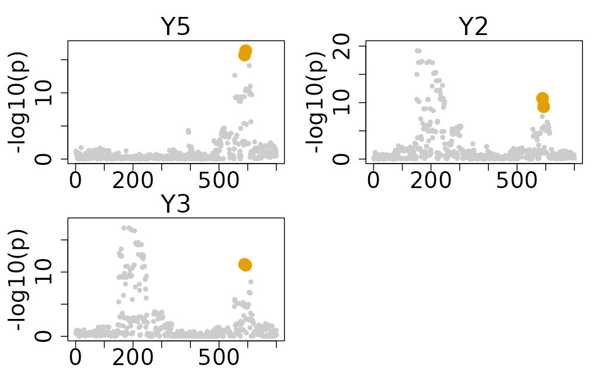
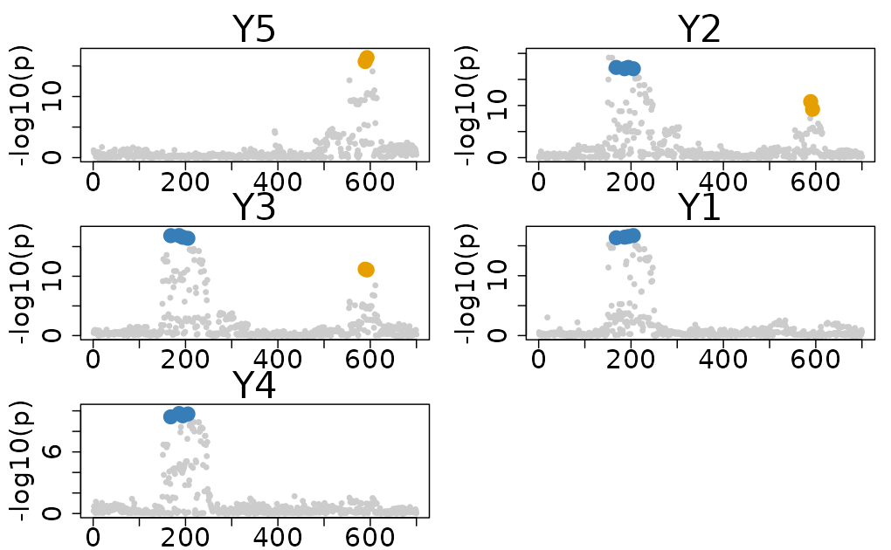

Mixed Data-type and Disease Prioritized Colocalization
Source:vignettes/Disease_Prioritized_Colocalization.Rmd
Disease_Prioritized_Colocalization.RmdThis vignette demonstrates how to perform multi-trait colocalization analysis using a mixed-type dataset, including both individual level data and summary statistics. ColocBoost provides a flexible framework to integrate data both at the individual level or at the summary statistic level, allowing the handling of scenarios where the individual data is available for some traits (like xQTLs) and the summary data is available for other traits (disease/trait GWAS).
1. Loading individual and summary statistics data
To get started, load both Ind_5traits and
Sumstat_5traits datasets into your R session. Once loaded,
create a mixed dataset as follows:
- For traits 1, 2, 3, 4: use individual level genotype and phenotype data.
- For trait 5: use summary statistics data.
- Note that
LDcould be calculated from theXdata in theInd_5traitsdataset, but it is not included in theSumstat_5traitsdataset.
Causal variant structure
The dataset features two causal variants with indices 194 and 589.
- Causal variant 194 is associated with traits 1, 2, 3, and 4.
- Causal variant 589 is associated with traits 2, 3, and 5 (summary level data).
# Load example data
data(Ind_5traits)
data(Sumstat_5traits)
# Create a mixed dataset
X <- Ind_5traits$X[1:4]
Y <- Ind_5traits$Y[1:4]
sumstat <- Sumstat_5traits$sumstat[5]
LD <- get_cormat(Ind_5traits$X[[1]])For analyze a specific one type of data, you can refer to the following tutorials Individual Level Data Colocalization and Summary Level Data Colocalization.
Due to the file size limitation of CRAN release, this is a subset of simulated data. See full dataset in colocboost paper repo.
2. ColocBoost in disease-agnostic mode
The preferred format for colocalization analysis in ColocBoost using mixed-type dataset:
-
Individual level data:
XandYare organized as lists, matched by trait index,-
(X[1], Y[1])contains individual level data for trait 1, -
(X[2], Y[2])contains individual level data for trait 2, - And so on for each trait under analysis.
-
-
Summary level data:
-
sumstatis organized as a list of data.frames for all traits -
LDis a matrix of linkage disequilibrium (LD) information for all variants across all traits.
-
This function requires specifying genotypes X and
phenotypes Y from the individual-level dataset and summary
statistics sumstat and LD matrix LD from
summary dataset:
# Run colocboost
res <- colocboost(X = X, Y = Y, sumstat = sumstat, LD = LD)
#> Validating input data.
#> Starting gradient boosting algorithm.
#> Gradient boosting for outcome 4 converged after 40 iterations!
#> Gradient boosting for outcome 5 converged after 59 iterations!
#> Gradient boosting for outcome 1 converged after 61 iterations!
#> Gradient boosting for outcome 3 converged after 91 iterations!
#> Gradient boosting for outcome 2 converged after 94 iterations!
#> Performing inference on colocalization events.
#> Extracting colocalization results with pvalue_cutoff = 0.001, cos_npc_cutoff = 0.2, and npc_outcome_cutoff = 0.2.
#> Keep only CoS with cos_npc >= 0.2. For each CoS, keep the outcomes configurations that pvalue of variants for the outcome < 0.001 and npc_outcome >0.2.
# Identified CoS
res$cos_details$cos$cos_index
#> $`cos1:y1_y2_y3_y4`
#> [1] 186 194 168 205
#>
#> $`cos2:y2_y3_y5`
#> [1] 589 593Results Interpretation
For comprehensive tutorials on result interpretation and advanced visualization techniques, please visit our tutorials portal at Visualization of ColocBoost Results and Interpret ColocBoost Output.
3. ColocBoost in disease-prioritized mode
When integrating with GWAS data, to mitigate the risk of biasing early updates toward stronger xQTL signals in LD proximity-and should in fact colocalize with-weaker signals from the disease trait of interest, we also implement a disease-prioritized mode of ColocBoost as a soft prioritization strategy to colocalize variants with putative causal effects on the focal trait.
To run the disease-prioritized mode, you need to specify the
focal_outcome_idx argument in the colocboost()
function.
-
focal_outcome_idxindicates the index of the focal trait in all traits of interest. - Note that the
focal_outcome_idxare counted from individual level data to summary statistics. Therefore, in this example,focal_outcome_idx = 5is used to indicate the index of the focal trait from (4 individual level traits) and (1 summary statistics).
# Run colocboost
res <- colocboost(X = X, Y = Y,
sumstat = sumstat, LD = LD,
focal_outcome_idx = 5)
#> Validating input data.
#> Starting gradient boosting algorithm.
#> Gradient boosting for focal outcome 5 converged after 29 iterations!
#> Gradient boosting for outcome 4 converged after 60 iterations!
#> Gradient boosting for outcome 1 converged after 82 iterations!
#> Gradient boosting for outcome 3 converged after 97 iterations!
#> Gradient boosting for outcome 2 converged after 99 iterations!
#> Performing inference on colocalization events.
#> Extracting colocalization results with pvalue_cutoff = 0.001, cos_npc_cutoff = 0.2, and npc_outcome_cutoff = 0.2.
#> Keep only CoS with cos_npc >= 0.2. For each CoS, keep the outcomes configurations that pvalue of variants for the outcome < 0.001 and npc_outcome >0.2.
# Plotting the focal only results colocalization results
colocboost_plot(res, plot_focal_only = TRUE)
Unlike the other existing methods, the disease-prioritized mode of ColocBoost only used a soft prioritization strategy. Therefore, it not only identify the colocalization of the focal trait, but also the colocalization across the other traits without the focal trait. To extract all CoS and visualization of all colocalization results, you can use the following code:
# Identified CoS
res$cos_details$cos$cos_index
#> $`cos1:y1_y2_y3_y4`
#> [1] 186 194 168 205
#>
#> $`cos2:y2_y3_y5:merged`
#> [1] 589 593
# Plotting all results
colocboost_plot(res)
Results Interpretation
For comprehensive tutorials on result interpretation and advanced visualization techniques, please visit our tutorials portal at Visualization of ColocBoost Results and Interpret ColocBoost Output.